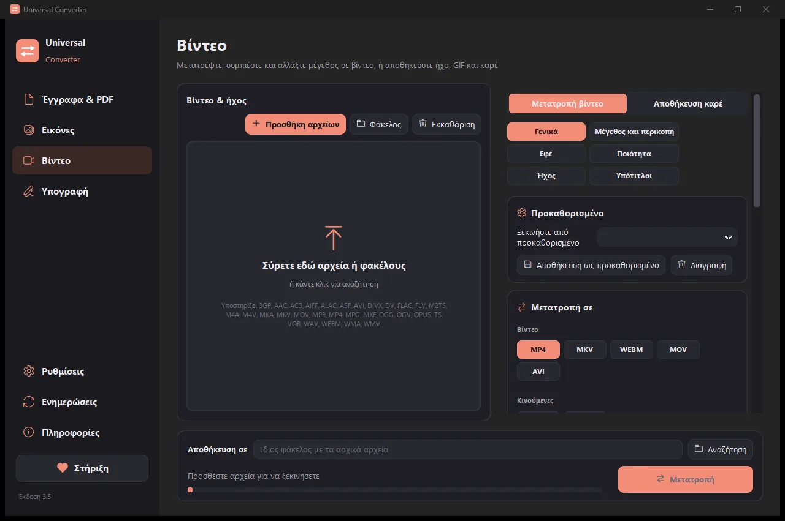

Μετατροπή βίντεο μεταξύ MP4, MKV, WebM, MOV και AVI
Το Universal Converter ανοίγει MKV, MOV, AVI, WMV, FLV, MPG, TS, WebM και άλλα, και τα μετατρέπει σε MP4, MKV, WebM, MOV ή AVI, κρατώντας τα κομμάτια ήχου και υποτίτλων που επιλέγετε. Το MP4 παίζει σχεδόν παντού. Η εφαρμογή Android μετατρέπει σε MP4, MKV, WebM και MOV.
Εγκατάσταση και ενημερώσεις
- Ανοίξτε το .dmg που κατεβάσατε και σύρετε το Universal Converter στις Εφαρμογές.
- Ανοίξτε την εφαρμογή. Την πρώτη φορά το macOS την μπλοκάρει, επειδή δεν είναι υπογεγραμμένη από την Apple: πατήστε «Τέλος».
- Ανοίξτε Ρυθμίσεις συστήματος > Απόρρητο και ασφάλεια, κυλήστε προς τα κάτω, πατήστε «Άνοιγμα ούτως ή άλλως» και δώστε τον κωδικό σας. Αυτό γίνεται μόνο μία φορά.
Ενημερώσεις: αν το επιτρέψετε όταν ανοίξει πρώτη φορά, η εφαρμογή ελέγχει για νέες εκδόσεις σε κάθε εκκίνηση, επαληθεύει την ψηφιακή τους υπογραφή και τις εγκαθιστά όταν το επιλέξετε.
Εγκατάσταση και ενημερώσεις
- Πατήστε «Λήψη για Android» από το κινητό σας.
- Ανοίξτε το αρχείο που κατέβηκε. Αν το ζητήσει το Android, επιτρέψτε στον περιηγητή ή στη διαχείριση αρχείων να εγκαθιστά εφαρμογές.
- Πατήστε «Εγκατάσταση».
Ενημερώσεις: όταν ανοίγετε την εφαρμογή, ελέγχει για νέα έκδοση και σας ενημερώνει όταν είναι έτοιμη. Κατεβάστε την με τον ίδιο τρόπο και εγκαταστήστε την πάνω από την παλιά· οι ρυθμίσεις σας διατηρούνται.
Εγκατάσταση και ενημερώσεις
- Κατεβάστε το αρχείο .AppImage.
- Κάντε το εκτελέσιμο: δεξί κλικ, Ιδιότητες > Δικαιώματα και επιτρέψτε την εκτέλεση ως προγράμματος (ή σε τερματικό: chmod +x Universal-Converter-*.AppImage).
- Κάντε διπλό κλικ. Δεν εγκαθίσταται τίποτα: η εφαρμογή είναι αυτό το ένα αρχείο.
Ενημερώσεις: αν το επιτρέψετε στο πρώτο άνοιγμα, η εφαρμογή ελέγχει για νέες εκδόσεις σε κάθε εκκίνηση, επαληθεύει την ψηφιακή τους υπογραφή και αντικαθιστά το αρχείο AppImage εκεί όπου βρίσκεται.
Πώς γίνεται
- Ανοίξτε το Universal Converter.
- Σύρετε τα αρχεία σας ή έναν ολόκληρο φάκελο στο παράθυρο, ή πατήστε Προσθήκη αρχείων.
- Επιλέξτε τη μορφή που θέλετε στο Μετατροπή σε, για παράδειγμα MP4. Αφήστε τα υπόλοιπα όπως είναι ή διαλέξτε μια έτοιμη ρύθμιση.
- Πατήστε Μετατροπή. Τα νέα αρχεία αποθηκεύονται δίπλα στα αρχικά ή στον φάκελο που επιλέγετε.

Γιατί χωρίς internet;
Το Universal Converter κάνει τη δουλειά στη δική σας συσκευή. Τα αρχεία σας μένουν ιδιωτικά, τα μεγάλα αρχεία δεν είναι πρόβλημα και λειτουργεί χωρίς σύνδεση στο internet.
Τι άλλο μπορεί να κάνει
- Μετατροπή PDF σε Word
- Μετατροπή εγγράφων Word σε PDF
- Ένωση πολλών αρχείων σε ένα PDF
- Συμπίεση PDF στο μέγεθος που θέλετε
- Συμπίεση PDF σε 100 KB, 200 KB ή όποιο μέγεθος ζητά μια φόρμα
- Μετατροπή σελίδων PDF σε εικόνες JPG
- Σαρωμένο έγγραφο σε επεξεργάσιμο αρχείο Word
- Μετατροπή εικόνων μεταξύ JPG, PNG, WEBP και άλλων
- Αλλαγή μεγέθους εικόνων ή μείωση σε μέγεθος αρχείου
- Αλλαγή μεγέθους φωτογραφίας ή υπογραφής σε 20 KB, 50 KB ή ακριβή pixel
- Ένωση φωτογραφιών σε ένα PDF
- JPG σε PDF κάτω από 100 KB
- Αντιγραφή του κειμένου από εικόνα (OCR)
- Συμπίεση βίντεο χωρίς ανέβασμα
- Αποθήκευση του ήχου ενός βίντεο σε MP3
- GIF από βίντεο
- Πίνακες από PDF σε Excel
- Μετατροπή κίνησης λογαριασμού από PDF σε Excel
- Εξαγωγή πινάκων από τιμολόγια PDF σε Excel
- Υπογραφή PDF
- Συμπλήρωση φόρμας PDF